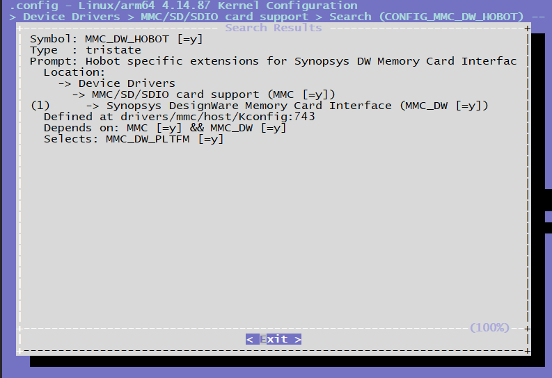
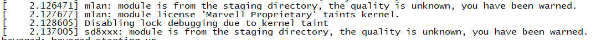

SDIO使用说明
SDIO概述
协议版本说明
地平线X3J3平台最高支持SDIO Ver3.0版本协议，包括eSDIO支持。支持SDIO标准命令接口，具体接口定义，请参考SDIO协议文档。
时钟支持
地平线X3J3平台SDIO接口前端时钟为1536Mhz/(8 *[1-16])，即1536除以8的整数倍。
模式支持
地平线X3J3平台SDIO接口支持4线SDR数据传输模式。
默认支持的SDIO协议传输模式有：
SD High Speed – 52MHz，实际时钟为48MHz
SDR12
SDR25
SDR50
SDR104
具体模式配置，请参考DTS修改。
目前，地平线X3J3平台不支持DDR传输模式。
驱动代码
本章节主要介绍基本的移植方法。
内核驱动代码
drivers/mmc/host/dw_mmc-hobot.c
drivers/mmc/host/dw_mmc-hobot.h
内核配置
CONFIG_MMC_DW_HOBOT

DTS修改
当前，X3J3平台默认关闭SDIO接口。如需使用，请在产品dts中加入：
&sdio2 {
status = "okay";
}
如需要支持特殊模式，请在产品dts中加入对应模式名，具体模式请参考SDIO协议文档。
如果需要自定义输入时钟，请在“sdio2”中加入“clock-frequency”字段，单位为赫兹。输入时钟受到前端时钟树分频影响，具体请咨询地坪线。例如：
&sdio2 {
status = "okay";
clock-frequency = <52000000>;
}
如果需要自定义总线速度，请在“sdio2”中加入“clock-freq-min-max”字段，单位为赫兹。输出时钟由输入时钟经控制器分频输出。例如：
&sdio2 {
status = “okay”;
clock-freq-min-max = <100000 52000000>;
}
sdio2其他字段，位于dts文件：“arch/arm64/boot/dts/hobot/hobot-xj3.dtsi”中，具体字段定义，请参考内核MMC框架代码及MMC驱动文件。
验证SDIO示例
本章节以Marvell SD8801 Wi-Fi模块为例，示意验证方法。
In-Tree编译
In-Tree编译后，模块依赖关系会自动生成。在dts打开SDIO2后，系统自动识别Wi-Fi模块并加载。在启动打印中，以下打印应出现：

同时，可以通过以下命令确认Wi-Fi模块已启动：
ifconfig mlan0
使用以下命令重新以NL80211接口加载驱动：
ifconfig mlan0 down
rmmod sd8xxx
insmod /lib/modules/4.14.74/sd8xxx.ko drv_mode=1 cfg80211_wext=0x0f
fw_name=mrvl/sd8801_uapsta.bin
配置Wi-Fi热点信息：下方“<Wi-Fi Name>”以及“<Wi-Fi Password>”请根据实际情况替换，不需要任何符号包围。
mount -o remount,rw /
wpa_passphrase <Wi-Fi Name><Wi-Fi Password> >> /userdata/wpa_supplicant.conf
启动Wi-Fi：
wpa_supplicant -D nl80211 -i mlan0 -c /userdata/wpa_supplicant.conf -B
udhcpc -i mlan0
测试链接：
ping www.baidu.com
Out-of-Tree编译
Out-of-Tree编译完成后，手动加载所有依赖库：
insmod /lib/modules/4.14.74/cfg80211.ko
insmod /lib/modules/4.14.74/mac80211.ko
insmod /lib/modules/4.14.74/mlan.ko
其余操作与in-tree编译相同。